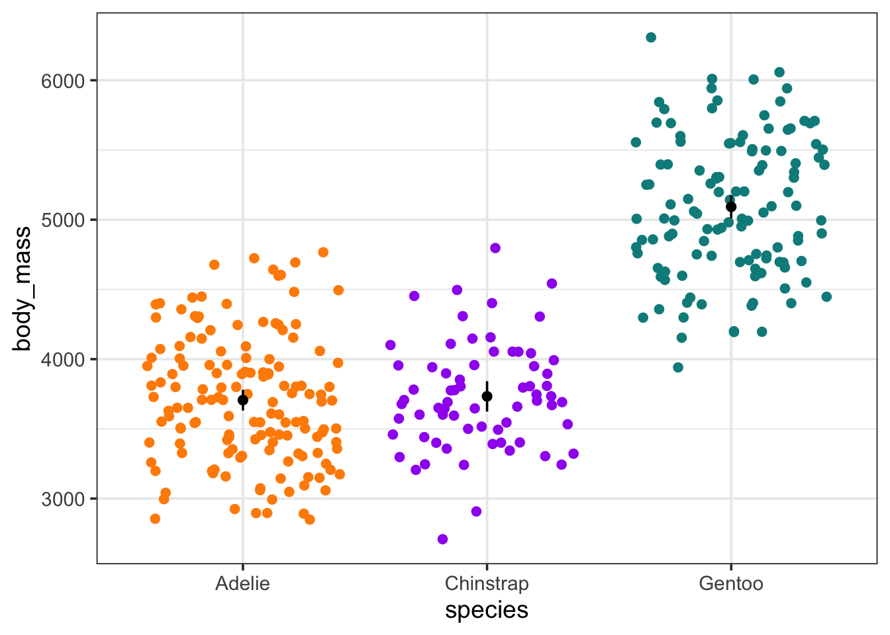
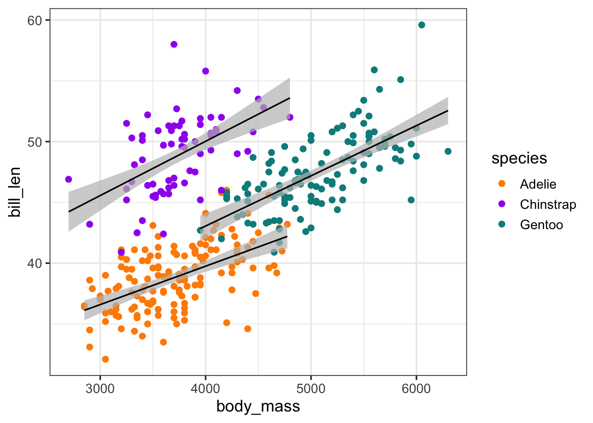

library(RTMB)
library(dplyr) # to make our lives easier
library(ggplot2) # my base enthusiasm has waned
penguins_clean <- na.omit(penguins) # get rid of NAsMarine Data Science for All, Regardless of Backbone!
Categorical Variables in RTMB with Palmer Penguins
R
statistics
Keywords
R, RTMB
After looking at linear regressions with the RTMB package, we’re naturally left with the question - whither categorical variables. Whether a model with categorical predictors, a model where coefficients vary by categorical predictors, a model with random effects - variable slopes or variable intercepts - or, really, anything weirder, we need categories! RTMB has got you, though, although you’re going to have to work for it a bit.
So what’s the answer? Vectors.
Can we see it in context? OK.
Will you be using Palmer Penguins again? Heck yeah.
Categorical Predictors
So, let’s consider a model where body_mass ~ species. Simple enough! The answer to what we’re gonna do lies in one version of the model.
$$ = {j}$$ $$y{ij} (, )$$ Where i is individual i in species j and $_{j}$ is the mean mass of species j. It’s an index! We have three species, so j is 1, 2, or 3! Which we can generate by using factors.
penguins_clean <-
penguins_clean |>
mutate(species_idx = as.factor(species) |> as.numeric())
# see the matchip
penguins_clean |>
group_by(species) |>
summarize(species_idx = unique(species_idx))# A tibble: 3 × 2
species species_idx
<fct> <dbl>
1 Adelie 1
2 Chinstrap 2
3 Gentoo 3Nice - and in alphabetical order too, so that will make our lives easier later.
NEVER ASSUME THEY WILL BE IN ORDER - ALWAYS CHECK THIS OR INVOKE SOME STEP TO ORDER OR YOU WILL DO BAD THINGS
Just sayin’.
OK, with that info down, we can start by making our list of parameters. The mean_mass value will, instead of being a single number, be a vector of three numbers! We can put in a lot of different start values, but, let’s use the mean of all penguins in the data as a reasonable start.
m <- mean(penguins_clean$body_mass)
mass_params <- list(
mean_mass = rep(m,3),
logsigma = log(sd(penguins_clean$body_mass))
)From there, we can build a simple objective function. The biggest difference between this and the linear regression is that we are now going to use an index with one of our parameters as it is a vector. Here, it’s just for means. But, you could do this with slopes just as well. I’m also going to use the %~% operator for the likelihood, as, again, I’m a fan.
mass_mod <- function(p){
getAll(penguins_clean, p)
# get that SD
sigma <- exp(logsigma)
ADREPORT(sigma)
# DGP
mass_hat <- mean_mass[species_idx]
# likelihood
body_mass %~% dnorm(mass_hat, sigma)
}OK! Model made! Let’s fit it. We’ll make our ADFun and then use nlminb() to fit (optim() doesn’t really like a means model using the defail “Nelder-Mead”, but, see below for an example that does work)
mass_fit <- MakeADFun(mass_mod,
mass_params,
silent = TRUE)
mass_opt <- with(mass_fit,
nlminb(par, fn, gr)
)
# works
# mass_opt <- with(mass_fit,
# optim(par, fn, gr, method = "L-BFGS-B")
# )After this, we can use sdreport() to get the relevant info and plot! Although we will have to add the OG species names back
params <- sdreport(mass_fit) |>
summary() |>
as_tibble(rownames = "parameter") |>
janitor::clean_names()
params# A tibble: 5 × 3
parameter estimate std_error
<chr> <dbl> <dbl>
1 mean_mass 3706. 38.0
2 mean_mass 3733. 55.6
3 mean_mass 5092. 42.1
4 logsigma 6.13 0.0387
5 sigma 459. 17.8 # plot!
params[-c(4:5),] |>
mutate(species = levels(penguins_clean$species)) |>
ggplot(aes(x = species, y = estimate,
color = species)) +
geom_jitter(data = penguins_clean, aes(y = body_mass)) +
geom_point(color = "black", size = 2) +
geom_linerange(aes(ymin = estimate - 1.96*std_error,
ymax = estimate + 1.96*std_error),
color = "black") +
scale_color_manual(
values = c("darkorange","purple","cyan4"),
guide = NULL) +
theme_bw(base_size = 14)
Bazinga!
Random Effects
While I don’t love 3 as a number of groups for random effects, it’s enough! We can try it! So, first, what’s the model, as, our model should translate directly into our objective function. Let’s do something simple for body_mass
$$ = {j}$$ $${j} (, {species})$$ $$y{ij} (, )$$ Here where $$ is the some penguin-level grand mean, and each species mean is drawn from a normal distribution around it. This means that our objective function will have to have a few new parameters - the grand mean and a log sigma for species - and a part where we specify that mean mass is drawn from a normal distribution.
Yes, you could code this as deviation from the grand mean to make your random effects comparable to, say, lme4 output of ranef(), but, if all we’re interested in is looking at the species-level effects, not just the “fixed” effects (I know, that’s a loaded term with a lot of complexity, especially for Ecologists). So, you could code it as deviation, or even have mass_hat be a sum of the fixed effect grand mean and the random effect deviation. Lots of flexibility! Or rope to hang yourself with? You decide! And, remember, some choices can greatly improve model convergence and speed over others. But for the moment…
mass_re_mod <- function(p){
getAll(penguins_clean, p)
# get that SD
sigma <- exp(logsigma)
ADREPORT(sigma)
# RE Sigma
sp_sigma <- exp(sp_logsigma)
ADREPORT(sp_sigma)
# RE
mean_mass %~% dnorm(gmean_mass, sp_sigma)
# DGP
mass_hat <- mean_mass[species_idx]
# likelihood
body_mass %~% dnorm(mass_hat, sigma)
}This is great. Now, we just need to define our initial parameter list. We can use both the mean of our data as start values for the grand mean and the mean mass of all species, and just use the log of the sd for each logsigma.
mass_re_params <- list(
gmean_mass = m,
mean_mass = rep(m,3),
logsigma = log(sd(penguins_clean$body_mass)),
sp_logsigma = log(sd(penguins_clean$body_mass))
)Finally, we can make MakeADFun() and fit. BUT - one new wrinkle. We need to tell it which parameters are random. In this case, mean_mass. Then we’ll fit with nlminb() I’ll throw in a few other examples that work, too.
mass_re_fit <- MakeADFun(mass_re_mod,
mass_re_params,
random = "mean_mass",
silent = TRUE)
mass_opt <- with(mass_re_fit,
nlminb(par, fn, gr)
)
# works
# mass_opt <- with(mass_re_fit,
# optim(par, fn, gr, method = "L-BFGS-B")
# )
# works - try other methods as well
# mass_opt <- with(mass_re_fit,
# optim(par, fn, gr, method = "L-BFGS-B")
# )
# works with warning
# mass_opt <- with(mass_re_fit,
# optimx::opm(par, fn, gr, method = "L-BFGS-B")
# )
# works - but gradient free
# also work looking at the nlmixr2 package and the
#
# mass_opt <- with(mass_re_fit,
# minqa::bobyqa(par, fn)
# )How did it do? Compare to lme4
mass_re_fit |>
sdreport() |>
summary() Estimate Std. Error
gmean_mass 4207.055989 374.98360021
logsigma 6.132951 0.03892482
sp_logsigma 6.471637 0.41098704
mean_mass 3707.900998 38.11532151
mean_mass 3736.602453 55.80660586
mean_mass 5088.673802 42.30186928
sigma 460.794033 17.93632394
sp_sigma 646.541545 265.72019710library(lme4)
mod <- lmer(body_mass ~ (1|species), data = penguins_clean)
coef(mod)$species (Intercept)
Adelie 3707.256
Chinstrap 3735.292
Gentoo 5089.839Not bad! Now, we would need ot do the cleanup work to get the values assigned to a species and such, but, we’re doing good!
Separate Slopes
OK, we’ve looked at means a lot. Let’s finish up with separate lines for separate species. Last time we looked at a simple linear regression and how body mass predicts bill length. Using our indexing logic above, the only change we would need to make to that model is to add in a species specific slope and intercept - so, change our initial parameters from single variables to vectors, and do some indexing in the function.
So, here is the original linear regression:
linreg <- function(p){
getAll(penguins_clean, p) # so we can stop using $
# a transformed parameter
sigma <- exp(logsigma)
ADREPORT(sigma) #so we can see it later
#REPORT(sigma) #for simulation
# What are we observing for later sims
bill_len <- OBS(bill_len)
# model for DGP and output those fitted values
bill_len_hat <- intercept + body_mass_slope * body_mass
ADREPORT(bill_len_hat)
# EGP
bill_len %~% dnorm(,
mean = bill_len_hat,
sd = exp(logsigma))
}Let’s add that indexing to make an categorical-continuous model with variable slopes. Note - I’ll leave it to you to ponder how this would work as a mixed model given the above. It’s not that different!
varslope_mod <- function(p){
getAll(penguins_clean, p) # so we can stop using $
# a transformed parameter
sigma <- exp(logsigma)
ADREPORT(sigma) #so we can see it later
#REPORT(sigma) #for simulation
# What are we observing for later sims
bill_len <- OBS(bill_len)
# model for DGP and output those fitted values
bill_len_hat <- intercept[species_idx] +
body_mass_slope[species_idx] * body_mass
ADREPORT(bill_len_hat)
# EGP
bill_len %~% dnorm(mean = bill_len_hat,
sd = exp(logsigma))
}That’s it! Now we just need to make start parameters - as a vector - and fit.
varslope_params <- list(intercept = rep(0, 3),
body_mass_slope = rep(0, 3),
logsigma = log(sd(penguins_clean$bill_len)))
varslope_fit <- MakeADFun(varslope_mod,
varslope_params,
silent = TRUE)
varslope_opt <-with(varslope_fit,
nlminb(par, fn, gr))Now, we could look at the summary of the sdreport to get coefficients, etc. But, let’s just end in a plot. Because re reported out the fit values, and they are in the order of our data, we can do a little dplyr magic to merge it back with the original data and make a nice plot!
predictions <- varslope_fit |>
sdreport() |>
summary() |>
as_tibble(rownames = "parameter") |>
filter(parameter == "bill_len_hat") |>
janitor::clean_names() |>
select(-parameter) |>
mutate(ci_low = estimate - 1.96*std_error,
ci_high = estimate + 1.96*std_error)
penguins_clean_pred <- bind_cols(penguins_clean,
predictions)
ggplot(penguins_clean_pred,
aes(x = body_mass, color = species)) +
geom_point(aes(y = bill_len)) +
geom_ribbon(aes(y = estimate,
ymin = ci_low,
ymax = ci_high,
group = species),
fill = "grey",
color = NA,
alpha = 0.7) +
geom_line(aes(y = estimate, group = species),
color = "black")+
scale_color_manual(
values = c("darkorange","purple","cyan4")) +
theme_bw(base_size = 14)
Well that was wild. Why did I do this?
Again, for simple standard stuff, meh. For more complex models, this can get you in the guts. Heck, even for simple stuff, this can REALLY make you think about what you are doing and why. VERY useful. Particularly as a teaching tool.